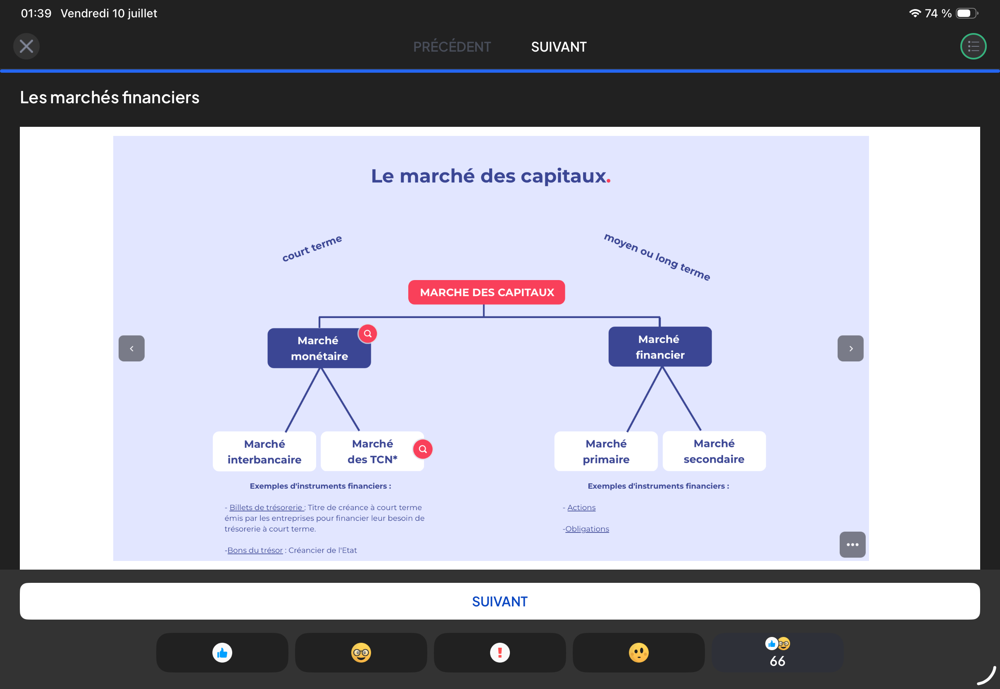
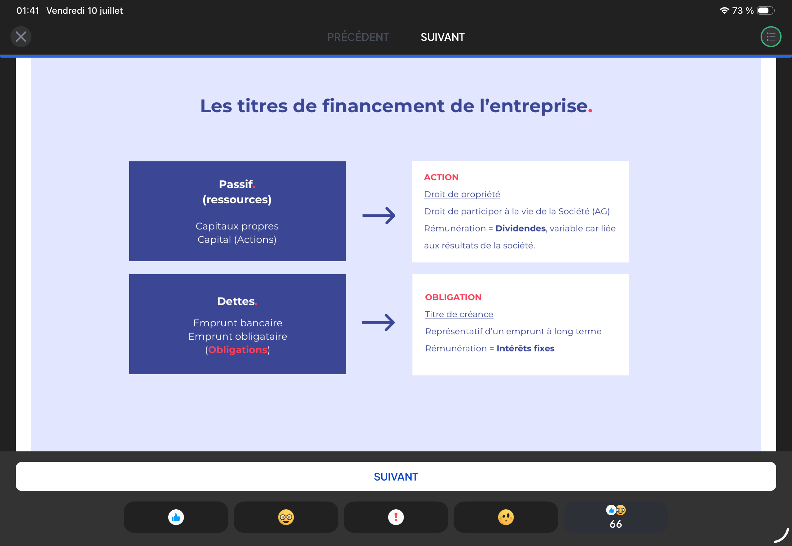
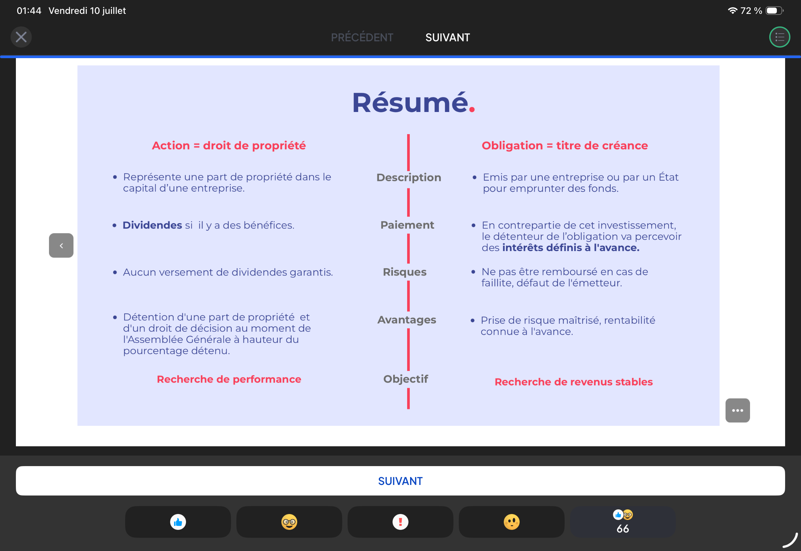
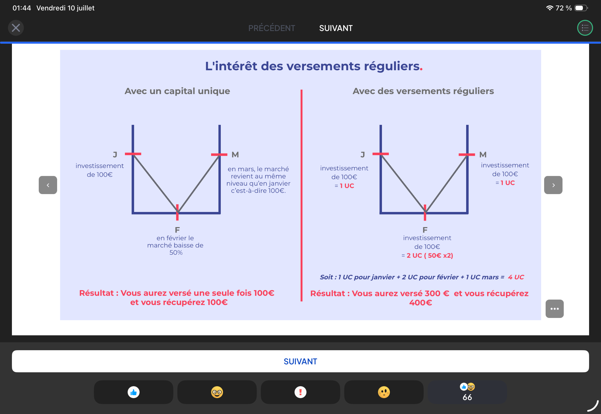
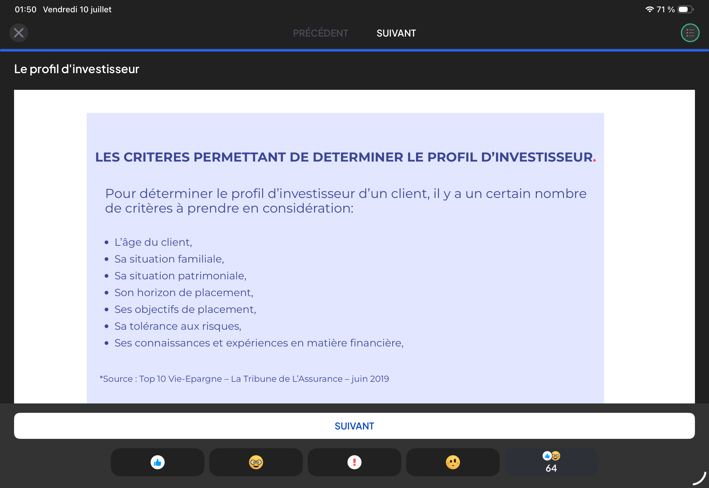
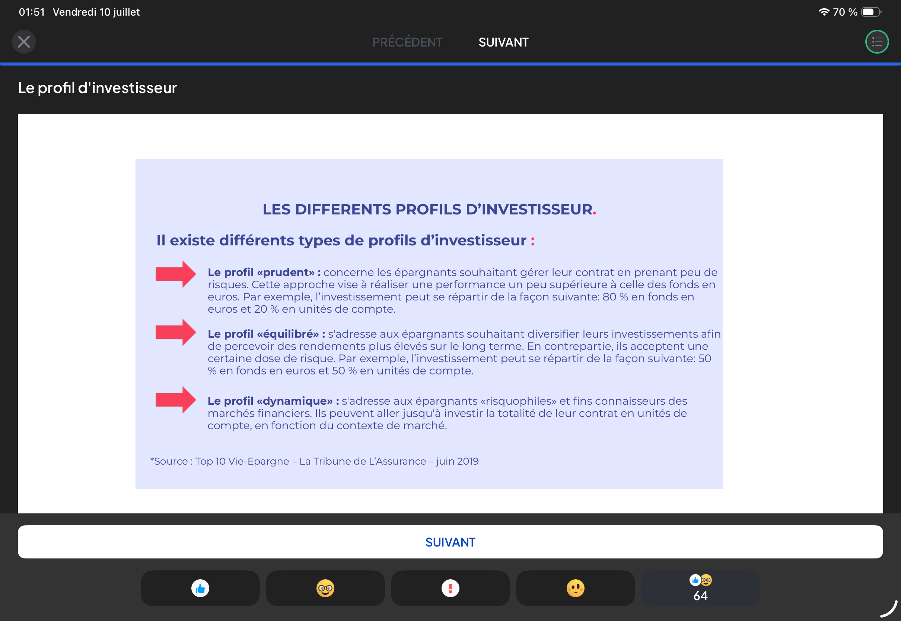

Marché monétaire • Marché primaire & secondaire • Actions & Obligations • Versements réguliers • Profil investisseur • 40 cartes • 30 questions

| Marché | Horizon | Sous-marchés | Instruments |
|---|---|---|---|
| Monétaire | Court terme | Interbancaire + TCN | Billets de trésorerie, bons du trésor |
| Financier | Moyen/long terme | Primaire + Secondaire | Actions, Obligations |
Marché d’émission de titres nouveaux. Confrontation entre :
3 occasions :
Marché sur lequel s’échangent des titres préalablement émis sur le marché primaire = marché de l’occasion.
| Fonction | Description |
|---|---|
| Fixation des cours | Prix des titres selon la loi de l’offre et de la demande |
| Liquidité | Possibilité de revendre ses titres pour récupérer son argent à tout moment |


| Critère | ACTION | OBLIGATION |
|---|---|---|
| Définition | Droit de propriété dans le capital de l’entreprise | Titre de créance (prêt à l’entreprise ou à l’État) |
| Rémunération | Dividendes (variables, si bénéfice) | Intérêts fixes définis à l’avance |
| Risque | Aucun dividende garanti, perte possible | Risque de défaut (non remboursement) |
| Avantage | Droit de vote à l’AG, part de propriété | Rentabilité connue à l’avance, risque maîtrisé |
| Objectif | Recherche de performance | Recherche de revenus stables |
| Horizon | Moyen/long terme | Court/moyen terme |
Un indice boursier mesure l’évolution des cours d’un échantillon de sociétés cotées. CAC 40 = Cotation Assistée en Continu = 40 valeurs les plus importantes de la Place de Paris.
Organisme de Placement Collectif en Valeurs Mobilières — 2 types :

| Capital unique (100€) | Versements réguliers (100€/mois) | |
|---|---|---|
| Mois 1 (UC=100€) | 1 UC | 1 UC |
| Mois 2 (UC=50€) | 0 UC | 2 UC |
| Mois 3 (UC=100€) | 0 UC | 1 UC |
| Résultat | 1 UC = 100€ | 4 UC = 400€ pour 300€ versés |

| # | Critère | Impact |
|---|---|---|
| 1 | Âge | Jeune = peut prendre plus de risques. Ne suffit pas seul. |
| 2 | Situation familiale | Couple + enfants → prudent. Célibataire → tend à prendre des risques. |
| 3 | Situation patrimoniale | Petit patrimoine → protéger le capital. Grand patrimoine → pas forcément risquophile. |
| 4 | Horizon de placement | CT (<3 ans) → risque maîtrisé. LT (>8 ans) → peut prendre des risques. |
| 5 | Objectifs de placement | Retraite ? Protection famille ? Capitalisation ? → Clarifie les motivations. |
| 6 | Tolérance au risque | Personnalité subjective (valeurs, éducation, croyances). Le plus personnel. |
| 7 | Connaissances & expériences | Connaît-il les produits ? A-t-il déjà investi ? Déjà perdu ? |

Faible prise de risque. Vise une performance légèrement supérieure aux fonds euros.
80% Fonds Euros / 20% UC
Diversification pour rendements plus élevés LT, accepte une dose de risque.
50% Fonds Euros / 50% UC
Risquophile, fin connaisseur des marchés. Performance maximale recherchée.
Jusqu’à 100% UC